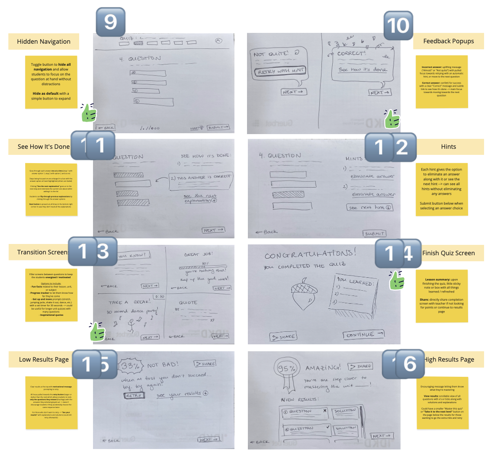
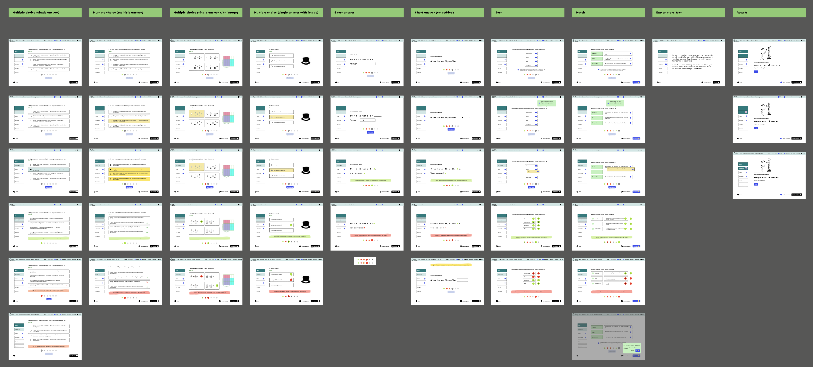
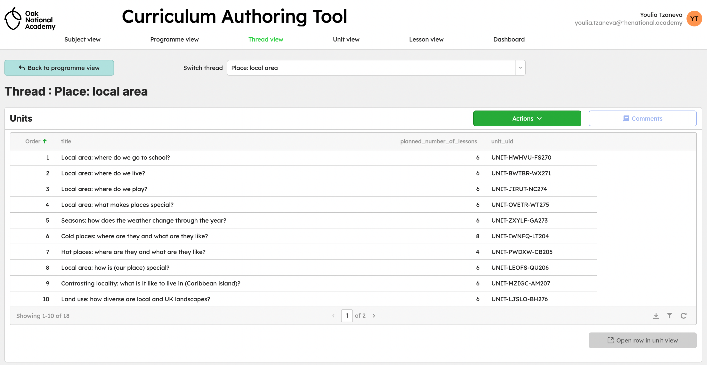
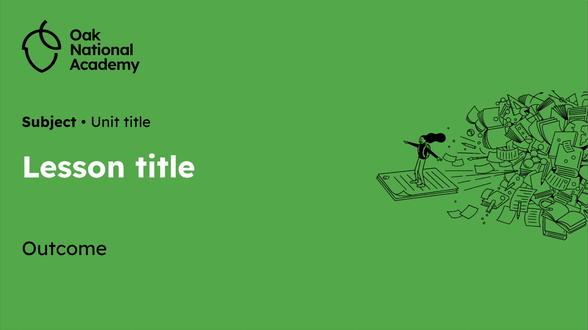
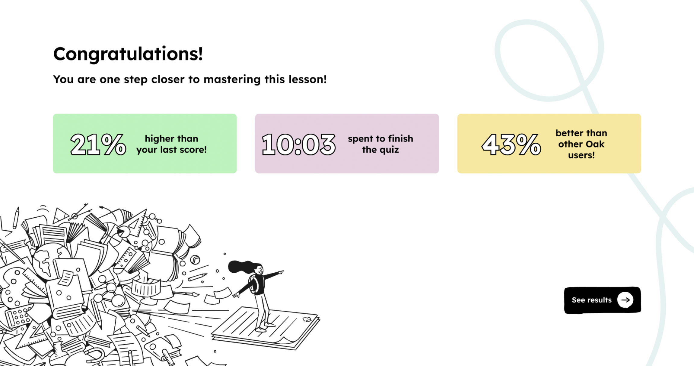

Accessibility first
Ensure content could be used across different ages, abilities, and learning environments.
Oak National Academy is a digital education platform created to support teachers and students with accessible, high-quality learning resources—initially accelerated by the shift to remote learning during the pandemic.
Working across design and content teams, I contributed to improving both:
Oak served two fundamentally different user groups within one ecosystem:
How might we design a system that supports both content creation and content consumption without compromising accessibility, clarity, or scalability?
We aligned success around three principles:
Ensure content could be used across different ages, abilities, and learning environments.
Simplify how students and teachers interact with learning materials.
Make it easier for curriculum teams to produce and manage high-quality lessons.
After reviewing research and stakeholder insights, I created user journeys and flows across students, teachers, and curriculum teams.
A key insight emerged: Better internal tools lead to better student experiences.
This shifted our focus beyond interfaces to the full educational ecosystem.
Within the team, we analyzed competitor learning experiences, ran ideation workshops, refined quiz interactions and learning flows, and restructured the design system for cross-team clarity.

To improve the student experience, I designed and iterated on lesson browsing, quiz experiences, feedback systems, and classroom materials. A key focus was reducing friction while improving clarity and accessibility.
We also created separate but consistent portals for students and teachers/curriculum teams. This ensured usability while maintaining a cohesive product experience.

In parallel, I designed a Curriculum Authoring Tool in Retool that enabled teams to create lessons, manage curriculum data, and monitor content progress.
Working closely with curriculum experts deepened my understanding of how educational content is created and helped improve my product decisions.

I also redesigned classroom slide decks and worksheets to improve consistency and usability.
We tested materials directly with teachers in classroom settings and gathered feedback on clarity, ease of use, and teaching flow. This feedback informed future iterations and improvements.

Within 6 weeks of launching the Curriculum Authoring Tool:
5,500
lessons created
1,800
fully populated lessons
Additional outcomes were improved content creation efficiency, more consistent learning materials, clearer quiz flows and interactions, & improved accessibility across experiences,

This project reinforced the importance of designing systems, not isolated interfaces. I learned that accessibility works best when embedded from the beginning, and that improving internal tools can have a direct impact on the end-user experience. Good educational design reduces friction between teaching and learning.
"Youlia's been fantastic for us at Oak National Academy, supporting multiple development squads across the design lifecycle, working directly with Product Managers and developers on discovery, UX flows and detailed UI design. A valuable addition to any team!"
A systematic approach to solving complex problems, ensuring every decision is backed by research and user needs.